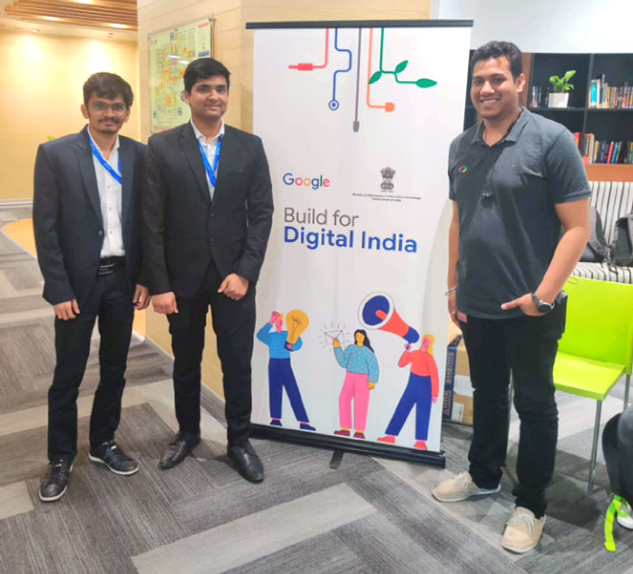
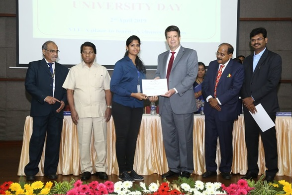
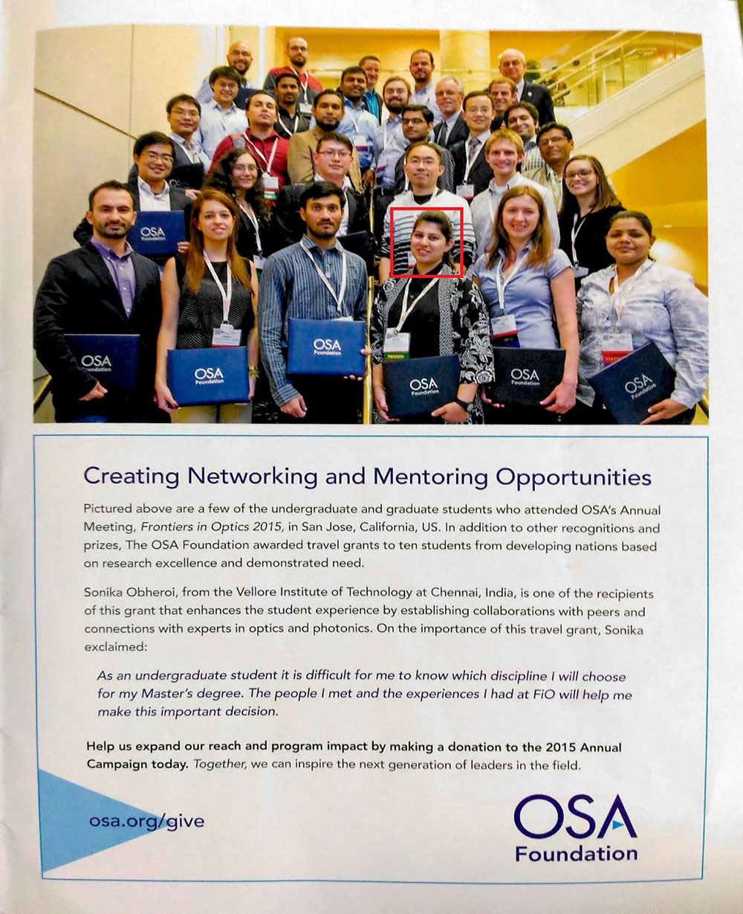

Student Achievement
I. Scope Student Achievement
- 2nd Position at Code2Create, conducted by ACM VIT Student Chapter. Tried making UI UX from scratch for the first time. Plus point is we won ₹10,000 for our App, Wire.
- Mr. Jaivarsan (B.Tech. CSE with Specialization in Bioinformatics) has coauthored a paper titled “Bioconda: A sustainable and comprehensive software distribution for the life sciences” which was published in Nature Methods Journal. The journal
has an impact factor of 26.919. Mr. Shubham Saraff (B.Tech. CSE with Specialization in Bioinformatics) Global Winner of IET-PATW , Winner of Ideas 2 Innovation Entrepreneurship Competition, Distinction Fryer and Pascal Math Contest, Youngest
& Best Delegate.
- Students won the Mozilla Firefox Hackathon, a two day Hackathon focusing on App development. A team of students were selected in the top three amongst 107 entries in the Google Product Prodigy Event, an annual technical competition organized by
Google.
-
Students participated in Microsoft Imagine Cup under the team name of Exception Underflow and were placed amongst the top 5 teams in India in the innovation challenge. Mr.Darsh Patel (B.Tech. CSE with Specialization in Information Security) and Team were
one of the 16 teams invited to Google's Banglore Headquarters, for it's Build for Digital India Program.
- Mr. Hemant H Kumar, (B.Tech. CSE), is a two-time Asia Regional Finalist at the Microsoft Imagine Cup. In 2020, he is as the first runner up at Asia level. His team developed a solution for tackling counterfeit drug proliferation in India using
Blockchain and a simple, easy to use mobile application.

II. Sense-Student Achievement
- Congratulations to our 2nd year B.Tech Electronics & Computer Engineering student Mr.Shoham Sengupta (Regno: 16BLC1001). His idea has bagged the 1st prize “Google Pixel 2” in the WiFi ThinkFestv2.0 contest conducted by Mojo networks & Nanocell
networks. He has won the 1st prize for his innovative idea contributing to BharatWIFI among 500+ registrations and 70+ ideas from across the globe. A panel of jury screened the idea and shortlisted 5 ideas. Those ideas got a chance to present
at 5th WiFi Knowledge Summit and top 3 winners were announced
- Soham Sengupta II Year ECM has made us all proud with his award-winning idea that featured in the following media report coverage in DT Next basis. About DT Next: DT Next is a part of Dina Thanthi, which is the largest circulated newspaper in
Tamil Nadu, and is also the 5th largest read newspaper in the country.

III. Student Achievement
Sonikha Oberoi — Awarded the Best student award for her achievement by the OSA Foundation. Nominated as Executive Committee Officer of the prestigious Polarization Technical Group at Optical Society of America (OSA), Washington D.C, USA. She has won
GV special achiever award in 2016
